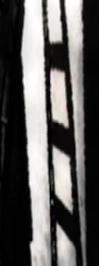

back to Paul's Poetry Page
back to Paul's Poetry Page|
objects in the mirror are closer than they appear. always check the blind spot before changing lanes. are these metaphors for life, I ask myself? I don't answer. the look in your eyes when you almost drowned. I knew enough not to reach for you but to jump right in clothes and all. panic didn't set in until years later. this is why I shiver at night. another pool many years later. this time it's empty save for last autumn's leaves and a memory of summer somewhere else. Paul David Mena 4 December, 1996 Cambridge, MA
|
 |
back to Paul's Poetry Page